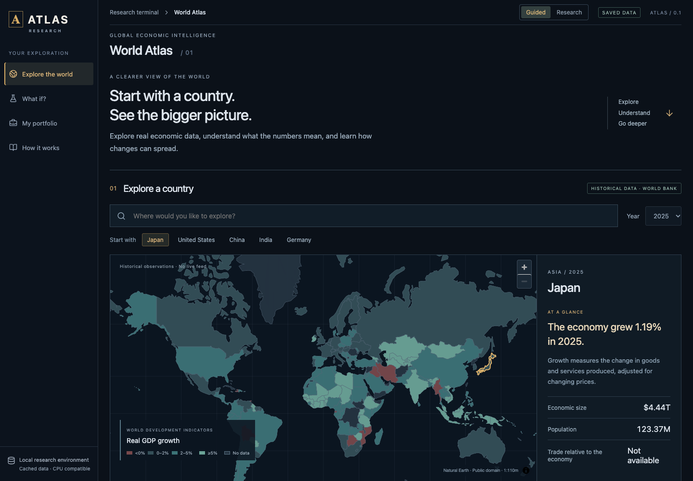
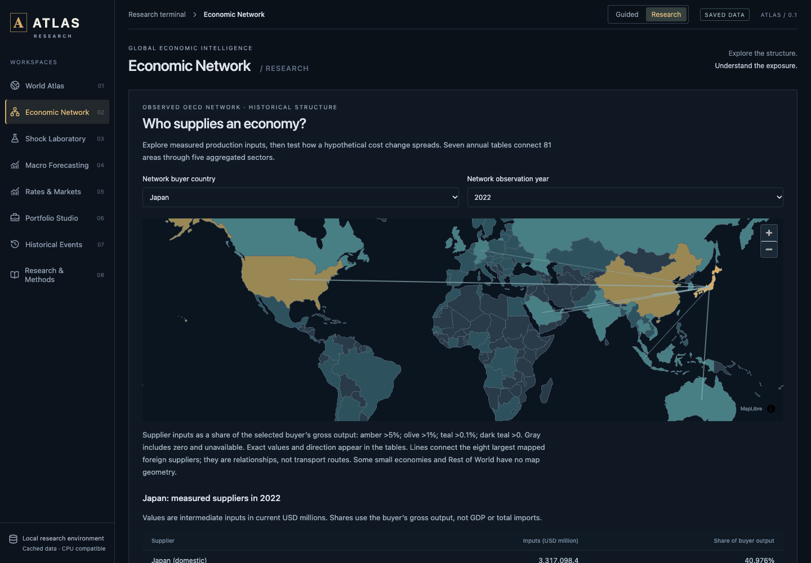

01 / Economic systems · Full-stack engineering
ATLAS.
Explore an economy. Trace its dependencies.
Inspect the evidence behind the model.
A local-first economic research terminal with real country observations, OECD production networks, reproducible PyTorch experiments, and a React world atlas.
A project showcase. ATLAS runs locally with Python and Node; the simulator is not hosted on this page.

From source tables to
an inspectable system.
Seven OECD tables, aggregated from 4,050 country-industry nodes into 81 areas and five sectors.
Saved CPU PyTorch experiments, with baselines, chronological evaluation and inference replay.
Backend and browser tests passed locally. Backend, setup and build also passed GitHub CI on three operating systems.
- Problem
Make global economic data and inter-industry dependencies understandable while keeping observed history, hypothetical scenarios and learned predictions distinct.
- Data pipeline
Validated seven OECD ICIO tables and aggregated 4,050 country-industry nodes into 405 nodes across 81 areas. Preserved accounting discrepancies, checked source hashes and independently verified sampled transaction totals. The country atlas adds World Bank observations and explicit missing values.
- Engineering
Built a single local FastAPI service, an offline map, deterministic structural solvers, portfolio analysis and actual CPU PyTorch inference. A release gate reproduces 60 GRU predictions and 2,430 graph-node predictions from 12 saved checkpoints. The optional population overlay loads on demand, reducing compressed initial main JavaScript by about 28%.
- Validation
40 backend and 22 browser tests passed locally, covering numerical calculations, data fidelity, responsive layouts and model replay. Cross-platform CI results are published separately.
- Finding
The exploratory graph model did not beat ridge on its single held-out year. The interface reports this result and the small-sample limitation. Production-cost scenarios do not claim causal market returns.
- Scope
A working local research application, not a hosted trading platform. An expanded ETF/event Scenario Studio is a documented future design, not a shipped feature.
What I built
- A validated data pipeline that preserves source hashes, missing values and published accounting discrepancies, with independent raw-table sample checks.
- A 405-node fixed-coefficient cost-propagation engine, with direct and indirect effects, numerical residuals and a supplier exposure map.
- Bond calculations, constrained portfolio analysis and walk-forward allocation with drifting weights and repeated transaction costs.
- A guided interface for country exploration, alongside research views with detailed assumptions and diagnostics.
- A reproducible local release that verifies data and model artifacts before startup. Optional population rendering loads on demand.


Useful results.
Visible limits.
The exploratory graph model did not outperform ridge on its single held-out year. ATLAS reports that result. The GRU also lacks consistent superiority across seeds. The project demonstrates reproducible research and numerical engineering, not a claim of predictive advantage.
OECD dependencies end in 2022; newer country observations, rates and selected official releases have separate dates. Scenarios assume fixed input shares and full cost pass-through. They do not identify causal market returns.
An expanded ETF/event Scenario Studio is a documented future design, not a shipped feature.
Run it locally
Download and extract the release, open its atlas directory, then run the commands below. Requires Node 22+, Python 3.12–3.13 and a WebGL2 browser. Installation needs Internet access; normal operation uses bundled data.
npm ci
npm run setup
npm run atlasOpen http://127.0.0.1:8000. See the release notes and research report.
Under the hood
Python · PyTorch · FastAPI · NumPy / SciPy · CVXPY · DuckDB / Parquet · React · TypeScript · MapLibre · Playwright